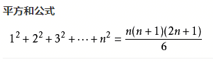

时间复杂度和空间复杂度是衡量算法的两个重要的标准。
时间复杂度
时间频度
一个算法执行所耗费的时间，从理论上是不能算出来的，必须上机运行测试才能知道。但我们不可能也没有必要对每个算法都上机测试，只需知道哪个算法花费的时间多，哪个算法花费的时间少就可以了。并且一个算法花费的时间与算法中语句的执行次数成正比例，哪个算法中语句执行次数多，它花费时间就多。
一个算法中的语句执行次数称为语句频度或时间频度。记为T(n)。
时间复杂度
在刚才提到的时间频度中，n称为问题的规模，当n不断变化时，时间频度T(n)也会不断变化。但有时我们想知道它变化时呈现什么规律。为此，我们引入时间复杂度概念。一般情况下，算法中基本操作重复执行的次数是问题规模n的某个函数，用T(n)表示，若有某个辅助函数f(n),使得当n趋近于无穷大时，T（n)/f(n)的极限值为不等于零的常数，则称f(n)是T(n)的同数量级函数。记作T(n)=Ｏ(f(n)),称Ｏ(f(n))为算法的渐进时间复杂度，简称时间复杂度。
时间频度不同，但时间复杂度可能相同。如：T(n)=n2+3n+4与T(n)=4n2+2n+1它们的频度不同，但时间复杂度相同，都为O(n2)。
按数量级递增排列，常见的时间复杂度有：
- 常数阶O(1)
- 对数阶O(log2n)
- 线性阶O(n)
- 线性对数阶O(nlog2n)
- 平方阶O(n2)
- 立方阶O(n3)
- k次方阶O(nk)
- 指数阶O(2n)
随着问题规模n的不断增大，上述时间复杂度不断增大，算法的执行效率越低。
最坏时间复杂度和平均时间复杂度
最坏情况下的时间复杂度称最坏时间复杂度。一般不特别说明，讨论的时间复杂度均是最坏情况下的时间复杂度。这样做的原因是：最坏情况下的时间复杂度是算法在任何输入实例上运行时间的上界，这就保证了算法的运行时间不会比任何更长。在最坏情况下的时间复杂度为T(n)=O(n)，它表示对于任何输入实例,该算法的运行时间不可能大于O(n)。
平均时间复杂度是指所有可能的输入实例均以等概率出现的情况下，算法的期望运行时间。
指数阶O(2n)，显然，时间复杂度为指数阶O(2n)的算法效率极低，当n值稍大时就无法应用。
求时间复杂度
(1)、 如果算法的执行时间不随着问题规模n的增加而增长，即使算法中有上千条语句，其执行时间也不过是一个较大的常数。此类算法的时间复杂度是O(1)。
1
2
3
4
5
6
7
8
9int x=91;
int y=100;
while(y>0){
if(x>100){
x=x-10;
y--;
} else
x++;
}时间复杂度T(n)=O(1)
这个程序看起来有点吓人，总共循环运行了1100次，但是循环的次数也是一个固定大小的常数，这段程序的运行是和n无关的，就算它再循环一万年，只是一个常数阶的函数。
1
sum = n*(n+1)/2;
时间复杂度O(1)
(2)、当有若干个循环语句时，算法的时间复杂度是由嵌套层数最多的循环语句中最内层语句的频度f(n)决定的。
1
2
3for(int i = 0; i < n; i++){
//程序
}时间复杂度O(n)
1
2
3
4
5for(int i = 0; i < n; i++){
for(int j = 0; j < n; j++){
//程序
}
}时间复杂度O(n2)
1
2
3
4
5for(int i = 0; i < n; i++){
for(int j = i; j < n; j++){
//程序
}
}运行次数为(1+n)*n/2
时间复杂度O(n2)1
2
3
4
5
6
7for(int i=1; i<=n; i++){//1
for(j=1;j<=i;j++){//2
for(k=1;k<=j;k++){//3
//4
}
}
}频度最大的语句是（//4），内循环的执行次数虽然与问题规模n没有直接关系，但是却与外层循环的变量取值有关，而最外层循环的次数直接与n有关，因此可以从外层循环向内层循环分析（//4）的执行次数：
- //1最外层的循环次数:n
- //2中层的循环次数:n(n+1)/2=n2/2+n/2
- //3内层的循环次数:n(n+1)(n+2)/6
∑(n2/2+n/2)=∑(n2/2)+∑(n/2)=n(n+1)(n+2)/6，其中(n=1,2,3……n)

则内层的时间复杂度为T(n)=O(n3/6+低次项)=O(n3)
(3)、算法的时间复杂度不仅仅依赖于问题的规模，还与输入实例的初始状态有关。
在数组A[0,1,2……n-1]中查找给定值K的算法大致如下：
int i=n-1; while(i>=0 && (A[i] != K)){ i--;//3 } return i;此算法中的语句(3)的频度不仅与问题规模n有关，还与输入实例中A的各元素取值及K的取值有关:
①若A中没有与K相等的元素，则语句(3)的频度f(n)=n；
②若A的最后一个元素等于K,则语句(3)的频度f(n)是常数0。
(4)、时间复杂度评价性能
有两个算法A1和A2求解同一问题，时间复杂度分别是T1(n)=100n2，T2(n)=5n3。
当输入量n＜20时，有T1(n)＞T2(n)，后者花费的时间较少。
随着问题规模n的增大，两个算法的时间开销之比5n3/100n2=n/20亦随着增大。即当问题规模较大时，算法A1比算法A2要有效地多。
空间复杂度
一个程序的空间复杂度是指运行完一个程序所需内存的大小。利用程序的空间复杂度，可以对程序的运行所需要的内存多少有个预先估计。一个程序执行时除了需要存储空间和存储本身所使用的指令、常数、变量和输入数据外，还需要一些对数据进行操作的工作单元和存储一些为现实计算所需信息的辅助空间。程序执行时所需存储空间包括以下两部分：
(1) 固定部分，这部分空间的大小与输入/输出的数据的个数多少、数值无关。主要包括指令空间（即代码空间）、数据空间（常量、简单变量）等所占的空间。这部分属于静态空间。
(2) 可变空间，这部分空间的主要包括动态分配的空间，以及递归栈所需的空间等。这部分的空间大小与算法有关。
一个算法所需的存储空间用f(n)表示。S(n)=O(f(n))，其中n为问题的规模，S(n)表示空间复杂度。
总结
二叉排序树又称二叉查找树，这种给定值的比较次数等于给定值节点在二叉排序树中的层数。如果二叉排序树是平衡的，则n个节点的二叉排序树的高度为log2n+1,(其中log2n取整数)其查找效率为O(Log2n)，近似于折半查找。如果二叉排序树完全不平衡，则其深度可达到n，查找效率为O(n)，退化为顺序查找。一般的，二叉排序树的查找性能在O(Log2n)到O(n)之间。
一般的排序这些都不需要额外的序列内存，就在给定的序列上做排序，最多就是用一两个局部变量，这个空间复杂度就是O(1)。
二叉树遍历，用栈实现的话需要保存一些中间节点，但是最多也就保存二叉树最大深度个中间节点，所以就需要logN大小的栈，空间复杂度是O(logN)。
如果需要额外的跟原始序列一样大小的存储空间的话，空间复杂度是O(N)。一般就这三种。
空间复杂度可以理解为除了原始序列大小的内存 在算法过程中用到的额外的存储空间。